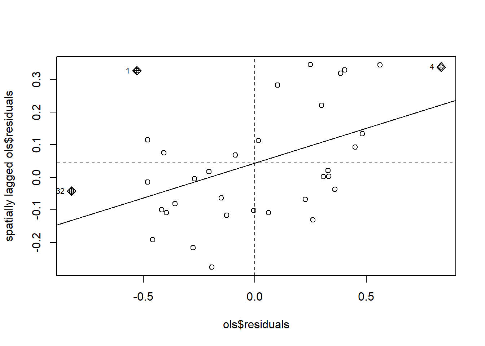

Warning: package 'spdep' was built under R version 4.4.3
Loading required package: spData
Warning: package 'spData' was built under R version 4.4.3
To access larger datasets in this package, install the spDataLarge
package with: `install.packages('spDataLarge',
repos='https://nowosad.github.io/drat/', type='source')`
Loading required package: sf
Warning: package 'sf' was built under R version 4.4.3
Linking to GEOS 3.13.0, GDAL 3.10.1, PROJ 9.5.1; sf_use_s2() is TRUE
library(spatialreg)
Warning: package 'spatialreg' was built under R version 4.4.3
Loading required package: Matrix
Attaching package: 'spatialreg'
The following objects are masked from 'package:spdep':
get.ClusterOption, get.coresOption, get.mcOption,
get.VerboseOption, get.ZeroPolicyOption, set.ClusterOption,
set.coresOption, set.mcOption, set.VerboseOption,
set.ZeroPolicyOption
library(RColorBrewer)library(splm)
Warning: package 'splm' was built under R version 4.4.3
library(sf)library(ggplot2)
Warning: package 'ggplot2' was built under R version 4.4.3
Warning in mat2listw(migrasi): style is M (missing); style should be set to a
valid value
6.2.3 Moran Test and Plot
moran.lm =lm.morantest(ols, W.migrasi)moran.lm
Global Moran I for regression residuals
data:
model: lm(formula = model1, data = provinsi)
weights: W.migrasi
Moran I statistic standard deviate = 3.4669, p-value = 0.0002632
alternative hypothesis: greater
sample estimates:
Observed Moran I Expectation Variance
0.213239417 -0.048308437 0.005691365
moran.plot(ols$residuals, W.migrasi)

6.2.4 LM Test
LM =lm.LMtests(ols, W.migrasi, test="all")
Please update scripts to use lm.RStests in place of lm.LMtests
Warning in lm.RStests(model = model, listw = listw, zero.policy = zero.policy,
: Spatial weights matrix not row standardized
LM
Rao's score (a.k.a Lagrange multiplier) diagnostics for spatial
dependence
data:
model: lm(formula = model1, data = provinsi)
test weights: listw
RSerr = 5.4456, df = 1, p-value = 0.01962
Rao's score (a.k.a Lagrange multiplier) diagnostics for spatial
dependence
data:
model: lm(formula = model1, data = provinsi)
test weights: listw
RSlag = 3.2163, df = 1, p-value = 0.07291
Rao's score (a.k.a Lagrange multiplier) diagnostics for spatial
dependence
data:
model: lm(formula = model1, data = provinsi)
test weights: listw
adjRSerr = 3.0702, df = 1, p-value = 0.07974
Rao's score (a.k.a Lagrange multiplier) diagnostics for spatial
dependence
data:
model: lm(formula = model1, data = provinsi)
test weights: listw
adjRSlag = 0.84087, df = 1, p-value = 0.3591
Rao's score (a.k.a Lagrange multiplier) diagnostics for spatial
dependence
data:
model: lm(formula = model1, data = provinsi)
test weights: listw
SARMA = 6.2865, df = 2, p-value = 0.04314
Call:lagsarlm(formula = model1, data = provinsi, listw = W.migrasi)
Residuals:
Min 1Q Median 3Q Max
-0.679482 -0.291161 -0.083437 0.336403 0.808845
Type: lag
Coefficients: (asymptotic standard errors)
Estimate Std. Error z value Pr(>|z|)
(Intercept) 1.744150 1.437574 1.2133 0.2250310
log(investment) 0.380784 0.079364 4.7979 1.603e-06
log(infra) 0.207431 0.073675 2.8155 0.0048701
log(revenue) 0.529174 0.136397 3.8797 0.0001046
Rho: 0.21114, LR test value: 3.0033, p-value: 0.083096
Asymptotic standard error: 0.12002
z-value: 1.7592, p-value: 0.07854
Wald statistic: 3.0949, p-value: 0.07854
Log likelihood: -14.24739 for lag model
ML residual variance (sigma squared): 0.13454, (sigma: 0.36679)
Number of observations: 34
Number of parameters estimated: 6
AIC: 40.495, (AIC for lm: 41.498)
LM test for residual autocorrelation
test value: 2.5558, p-value: 0.10989
6.2.6 Impacts (Spillover)
impacts(sar.provinsi, listw=W.migrasi)
Impact measures (lag, exact):
Direct Indirect Total
log(investment) 0.3831961 0.09950271 0.4826988
log(infra) 0.2087457 0.05420401 0.2629497
log(revenue) 0.5325268 0.13827873 0.6708055
Hausman Test
data: modelpanel
chisq = 37.156, df = 4, p-value = 1.673e-07
alternative hypothesis: one model is inconsistent
library(lmtest)
Loading required package: zoo
Attaching package: 'zoo'
The following objects are masked from 'package:base':
as.Date, as.Date.numeric
bptest(fem1)
studentized Breusch-Pagan test
data: fem1
BP = 5.8081, df = 4, p-value = 0.2139
pbgtest(fem1)
Breusch-Godfrey/Wooldridge test for serial correlation in panel models
data: modelpanel
chisq = 51.619, df = 5, p-value = 6.458e-10
alternative hypothesis: serial correlation in idiosyncratic errors
6.3.2 Depndency Test
pcdtest(fem1, test="lm")
Breusch-Pagan LM test for cross-sectional dependence in panels
data: log(PDRB) ~ log(AK) + log(PAD) + log(UMK) + log(IPM)
chisq = 1268.3, df = 595, p-value < 2.2e-16
alternative hypothesis: cross-sectional dependence
pcdtest(fem1, test="cd")
Pesaran CD test for cross-sectional dependence in panels
data: log(PDRB) ~ log(AK) + log(PAD) + log(UMK) + log(IPM)
z = 12.724, p-value < 2.2e-16
alternative hypothesis: cross-sectional dependence
Characteristics of weights list object:
Neighbour list object:
Number of regions: 35
Number of nonzero links: 148
Percentage nonzero weights: 12.08163
Average number of links: 4.228571
Weights style: W
Weights constants summary:
n nn S0 S1 S2
W 35 1225 35 18.64242 151.0178
Characteristics of weights list object:
Neighbour list object:
Number of regions: 35
Number of nonzero links: 175
Percentage nonzero weights: 14.28571
Average number of links: 5
Non-symmetric neighbours list
Weights style: W
Weights constants summary:
n nn S0 S1 S2
W 35 1225 35 12.44 144.48